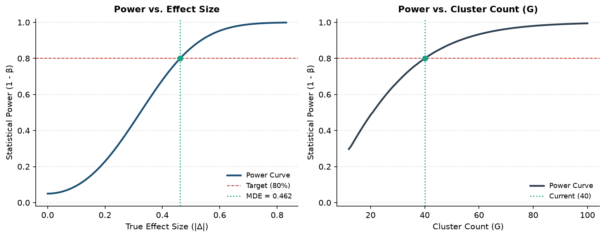

Shared Inference, Power Analysis & Reporting
Direct access to CR2/multi-way/WCB/EWC inference, Burlig–Preonas–Woerman & CCT power calculations, multi-format publication tables, JSON provenance, and offline AI.
1. Frontier Shared Inference Engine (quasi.inference)
All inference primitives are exposed directly for custom workflows: thin-SVD CR2 + Satterthwaite df (no O(ng2) matrices), Cameron–Gelbach–Miller multi-way clustering with PSD audit, Wild Cluster Bootstrap (Rademacher & Webb 6-point), and EWC fixed-b HAR.
from quasi.inference import (
least_squares, cr2_covariance, multiway_cluster_covariance,
wild_cluster_bootstrap, ewc_har_covariance,
)
fit = least_squares(X, y)
cr2 = cr2_covariance(X, fit.residuals, cluster_g) # O(N p^2) thin-SVD CR2 + Satterthwaite df
mw = multiway_cluster_covariance(X, fit.residuals, [g1, g2]) # Cameron-Gelbach-Miller multi-way + PSD audit
wcb = wild_cluster_bootstrap(X, y, cluster_g, param_index=1, null_value=0.0, reps=499, weights="webb", seed=42)
ewc = ewc_har_covariance(X, fit.residuals) # Lazarus-Lewis-Stock-Watson fixed-b HAROLS coef[1] = +1.0653
CR2 SE = 0.3047 (Satterthwaite df = 12.00 on G=14 clusters)
Multi-way SE= 0.2870 (PSD adjusted = False)
WCB (Webb) = t_obs=+3.632, p=0.0040 (reps=499)
EWC HAR SE = 0.2445 (df=17)2. Design-Based & Simulation Power Analysis (quasi.power)
Evaluate minimum detectable effects and required sample sizes before data collection—or run exact seeded Monte Carlo power with simulate_power() for any DesignSpec.
from quasi.power import did_mde, did_sample_size, rdd_mde, synth_feasibility, simulate_power
# Burlig, Preonas & Woerman (2020) AR(1) clustered panel DiD power
p_did = did_mde(n_clusters=40, n_periods=8, pre_periods=4, cluster_size=30, sd_y=2.0, serial_correlation=0.45, icc=0.05)
g_req = did_sample_size(target_mde=0.40, n_periods=8, pre_periods=4, cluster_size=30, sd_y=2.0, serial_correlation=0.45, icc=0.05)
# Exact CCT boundary-variance RDD power (with RBC inflation)
p_rdd = rdd_mde(n_total=2500, fraction_in_bandwidth=0.25, kernel="triangular", order=1, inference="bias_corrected")
# Synthetic control donor-pool feasibility screen
s_feas = synth_feasibility(n_donors=25, n_pre_periods=18, alpha=0.05)
# Monte Carlo simulation power for any DesignSpec
sim_pwr = simulate_power(
quasi.ITSDesign(outcome="y", time="t", intervention_date=30, error_model="ewc"),
dgp_fn, n_sims=30, seed=42,
)DiD MDE (G=40, AR1 rho=0.45, ICC=0.05): 0.4621 (0.231 SD); clusters for MDE=0.40 -> G=53
RDD MDE (N=2500, RBC triangular p=1) : 0.6023
Synth feasibility (N0=25, T0=18) : min two-sided p=0.0769, viable at 5%=False
Monte Carlo simulate_power (30 reps) : power=0.833 (MCSE=0.068), mean_est=1.512
p_did.plot()).3. Publication Tables, HTML Cards, JSON & AI Interpretation
compare_models() safely mixes standard and point-only results (like SDiDResult), extracts live diagnostics dynamically, and exports to LaTeX (AER / Nature), Typst, Markdown, HTML, and Rich terminal tables.
from quasi.reporting.table import compare_models
table = compare_models(
{"DiD (Imp. DR)": did_res, "Sharp RDD": rdd_res, "2SLS IV": iv_res, "SDiD (Point)": sdid_res},
title="Cross-Design Policy Evaluation Summary",
)
latex = table.to_latex() # AER booktabs LaTeX
typst = table.to_typst() # Modern Typst markup
md = table.to_markdown() # GitHub-Flavored Markdown
html = table.to_html() # Styled HTML table
rec = quasi.ResultRecord.from_json(did_res.to_json())
# Privacy-preserving AI explanation (metadata only, zero raw microdata transmitted)
quasi.ai.configure(provider="mock", offline=True)
print(did_res.explain(audience="academic"))Cross-Design Policy Evaluation Summary
| (1) DiD (Imp. DR) |
(2) Sharp RDD |
(3) 2SLS IV |
(4) SDiD (Point) |
|
|---|---|---|---|---|
| Panel A: Causal Estimates | ||||
| Treatment Effect | +4.325*** | +0.474*** | +1.835*** | -3.694 |
| (0.239) | (0.081) | (0.053) | (N/A) | |
| Panel B: Model Specification | ||||
| Model Class | CallawaySantAnnaDiD | SharpRDD | TwoStageLS | SyntheticDiD |
| Estimand | Post-treatment cohort-size-weighted ATT across identified (g,t) cells | Sharp RD local outcome discontinuity | IV structural coefficient (causal interpretation requires valid instrument assumptions) | Single-unit post-period average SDiD effect |
| Outcome Variable | score | gpa | wage | consumption |
| Inference | improved_dr_ipt_wls_analytical_normal_experimental | experimental_bias_corrected_nn | IV_2SLS_HC1 | not_available |
| Panel C: Identification Diagnostics | ||||
| Diagnostic Status | passed_checks_only | warnings | warnings | warnings |
| Unconditional pre-period placebo differences | p=0.510 [PASS] | - | - | - |
| Exploratory Density-Jump Screen (not McCrary) | - | p=0.024 [WARN] | - | - |
| Running-variable effective support (descriptive) | - | 245.000 [PASS] | - | - |
| Predetermined covariate continuity: prior_math (exploratory) | - | p=0.759 [PASS] | - | - |
| Excluded-instrument relevance (robust Wald) | - | - | p=0.000 [WARN] | - |
| Anderson-Rubin test (beta=0) | - | - | p=0.000 [WARN] | - |
| Overidentification (robust J pending) | - | - | 0.000 [WARN] | - |
| Intercept-adjusted pre-treatment fit (descriptive) | - | - | - | 0.378 [WARN] |
| Panel D: Sample Statistics | ||||
| Observations (N) | 1,050 | 1,200 | 800 | 338 |
| Treated Units | 95 | 595 | 800 | 1 |
| Notes: * p < 0.10, ** p < 0.05, *** p < 0.01. Standard errors reported in parentheses. | ||||
\begin{table}[htbp]
\centering
\caption{Cross-Design Policy Evaluation Summary}
\label{tab:quasi_comparison}
\begin{tabular}{lcccc}
\toprule
& \multicolumn{1}{c}{DiD (Imp. DR)} & \multicolumn{1}{c}{Sharp RDD} & \multicolumn{1}{c}{2SLS IV} & \multicolumn{1}{c}{SDiD (Point)} \\
& (1) & (2) & (3) & (4) \\
\midrule
\multicolumn{5}{l}{\textbf{Panel A: Causal Estimates}} \\
Treatment Effect & +4.325*** & +0.474*** & +1.835*** & -3.694 \\
& (0.239) & (0.081) & (0.053) & (N/A) \\
\midrule
\multicolumn{5}{l}{\textbf{Panel B: Model Specification}} \\
Model Class & CallawaySantAnnaDiD & SharpRDD & TwoStageLS & SyntheticDiD \\
Estimand & Post-treatment cohort-size-weighted ATT across identified (g,t) cells & Sharp RD local outcome discontinuity & IV structural coefficient (causal interpretation requires valid instrument assumptions) & Single-unit post-period average SDiD effect \\
Outcome Variable & score & gpa & wage & consumption \\
Inference & improved\_dr\_ipt\_wls\_analytical\_normal\_experimental & experimental\_bias\_corrected\_nn & IV\_2SLS\_HC1 & not\_available \\
\midrule
\multicolumn{5}{l}{\textbf{Panel C: Identification Diagnostics}} \\
Diagnostic Status & passed\_checks\_only & warnings & warnings & warnings \\
Unconditional pre-period placebo differences & p=0.510 [PASS] & - & - & - \\
Exploratory Density-Jump Screen (not McCrary) & - & p=0.024 [WARN] & - & - \\
Running-variable effective support (descriptive) & - & 245.000 [PASS] & - & - \\
Predetermined covariate continuity: prior\_math (exploratory) & - & p=0.759 [PASS] & - & - \\
Excluded-instrument relevance (robust Wald) & - & - & p=0.000 [WARN] & - \\
Anderson-Rubin test (beta=0) & - & - & p=0.000 [WARN] & - \\
Overidentification (robust J pending) & - & - & 0.000 [WARN] & - \\
Intercept-adjusted pre-treatment fit (descriptive) & - & - & - & 0.378 [WARN] \\
\midrule
\multicolumn{5}{l}{\textbf{Panel D: Sample Statistics}} \\
Observations (N) & 1,050 & 1,200 & 800 & 338 \\
Treated Units & 95 & 595 & 800 & 1 \\
\bottomrule
\end{tabular}
\begin{tablenotes}[flushleft]
\small\item \textit{Notes:} * $p<0.10$, ** $p<0.05$, *** $p<0.01$. Standard errors reported in parentheses.
\end{tablenotes}
\end{table}#figure(
table(
columns: (2.2fr, 1.2fr, 1.2fr, 1.2fr, 1.2fr),
align: (left, center, center, center, center),
stroke: none,
table.hline(stroke: 1.5pt),
[], [*(1) DiD (Imp. DR)*], [*(2) Sharp RDD*], [*(3) 2SLS IV*], [*(4) SDiD (Point)*],
table.hline(stroke: 0.8pt),
table.cell(colspan: 5)[*Panel A: Causal Estimates*],
[Treatment Effect], [+4.325\*\*\*], [+0.474\*\*\*], [+1.835\*\*\*], [-3.694],
[], [(0.239)], [(0.081)], [(0.053)], [(N/A)],
table.hline(stroke: 0.5pt),
table.cell(colspan: 5)[*Panel B: Model Specification*],
[Model Class], [CallawaySantAnnaDiD], [SharpRDD], [TwoStageLS], [SyntheticDiD],
[Estimand], [Post-treatment cohort-size-weighted ATT across identified (g,t) cells], [Sharp RD local outcome discontinuity], [IV structural coefficient (causal interpretation requires valid instrument assumptions)], [Single-unit post-period average SDiD effect],
[Outcome Variable], [score], [gpa], [wage], [consumption],
[Inference], [improved\_dr\_ipt\_wls\_analytical\_normal\_experimental], [experimental\_bias\_corrected\_nn], [IV\_2SLS\_HC1], [not\_available],
table.hline(stroke: 0.5pt),
table.cell(colspan: 5)[*Panel C: Identification Diagnostics*],
[Diagnostic Status], [passed\_checks\_only], [warnings], [warnings], [warnings],
[Unconditional pre-period placebo differences], [p=0.510 \[PASS\]], [-], [-], [-],
[Exploratory Density-Jump Screen (not McCrary)], [-], [p=0.024 \[WARN\]], [-], [-],
[Running-variable effective support (descriptive)], [-], [245.000 \[PASS\]], [-], [-],
[Predetermined covariate continuity: prior\_math (exploratory)], [-], [p=0.759 \[PASS\]], [-], [-],
[Excluded-instrument relevance (robust Wald)], [-], [-], [p=0.000 \[WARN\]], [-],
[Anderson-Rubin test (beta=0)], [-], [-], [p=0.000 \[WARN\]], [-],
[Overidentification (robust J pending)], [-], [-], [0.000 \[WARN\]], [-],
[Intercept-adjusted pre-treatment fit (descriptive)], [-], [-], [-], [0.378 \[WARN\]],
table.hline(stroke: 0.5pt),
table.cell(colspan: 5)[*Panel D: Sample Statistics*],
[Observations (N)], [1,050], [1,200], [800], [338],
[Treated Units], [95], [595], [800], [1],
table.hline(stroke: 1.5pt),
),
caption: [Cross-Design Policy Evaluation Summary],
)### Cross-Design Policy Evaluation Summary
| | (1) DiD (Imp. DR) | (2) Sharp RDD | (3) 2SLS IV | (4) SDiD (Point) |
| :--- | :---: | :---: | :---: | :---: |
| **Panel A: Causal Estimates** | | | | |
| Treatment Effect | +4.325*** | +0.474*** | +1.835*** | -3.694 |
| | (0.239) | (0.081) | (0.053) | (N/A) |
| **Panel B: Model Specification** | | | | |
| Model Class | CallawaySantAnnaDiD | SharpRDD | TwoStageLS | SyntheticDiD |
| Estimand | Post-treatment cohort-size-weighted ATT across identified (g,t) cells | Sharp RD local outcome discontinuity | IV structural coefficient (causal interpretation requires valid instrument assumptions) | Single-unit post-period average SDiD effect |
| Outcome Variable | score | gpa | wage | consumption |
| Inference | improved_dr_ipt_wls_analytical_normal_experimental | experimental_bias_corrected_nn | IV_2SLS_HC1 | not_available |
| **Panel C: Identification Diagnostics** | | | | |
| Diagnostic Status | passed_checks_only | warnings | warnings | warnings |
| Unconditional pre-period placebo differences | p=0.510 [PASS] | - | - | - |
| Exploratory Density-Jump Screen (not McCrary) | - | p=0.024 [WARN] | - | - |
| Running-variable effective support (descriptive) | - | 245.000 [PASS] | - | - |
| Predetermined covariate continuity: prior_math (exploratory) | - | p=0.759 [PASS] | - | - |
| Excluded-instrument relevance (robust Wald) | - | - | p=0.000 [WARN] | - |
| Anderson-Rubin test (beta=0) | - | - | p=0.000 [WARN] | - |
| Overidentification (robust J pending) | - | - | 0.000 [WARN] | - |
| Intercept-adjusted pre-treatment fit (descriptive) | - | - | - | 0.378 [WARN] |
| **Panel D: Sample Statistics** | | | | |
| Observations (N) | 1,050 | 1,200 | 800 | 338 |
| Treated Units | 95 | 595 | 800 | 1 |
*Notes:* * p < 0.10, ** p < 0.05, *** p < 0.01. Standard errors in parentheses.{
"additional_metadata": {
"design_audit": {
"checks": [
"columns_exist",
"missing_data_explicit",
"finite_numeric_values",
"unique_panel_keys",
"balanced_panel",
"absorbing_treatment_support"
],
"family": "did",
"n_excluded": 0,
"n_periods": 7,
"n_rows": 1050,
"n_units": 150,
"warnings": []
},
"inference_settings": {
"anticipation": 0,
"base_period": "universal",
"cluster_field": null,
"cluster_variance_correction": null,
"cohort_weight_uncertainty": "conditioned_on_observed_cohort_sizes",
"control_group": "not_yet_treated",
"degrees_of_freedom": null,
"est_method": "dr_improved",
"event_band": "rademacher_multiplier_max_t_experimental",
"method": "improved_dr_ipt_wls_analytical_normal_experimental",
"n_independent_clusters": null,
"reference_certified": false,
"se_unit": "panel_unit"
},
"model_meta": {
"anticipation": 0,
"base_period": "universal",
"cadence": "annual",
"cluster": null,
"cluster_variance_correction": null,
"conditioning": "Observed cohort sizes treated as fixed for aggregation inference",
"control_group": "not_yet_treated",
"est_method": "dr_improved",
"inference_method": "improved_dr_ipt_wls_analytical_if_experimental",
"method_validation": "experimental_unverified",
"n_clusters": null,
"propen
...
}Estimation conducted via CallawaySantAnnaDiD indicates a statistically significant at the specified threshold treatment effect on score (estimate = 4.3246, SE = 0.2387, p = 0.0000). Diagnostic check status: passed_checks_only. Causal identification depends on assumptions not established by diagnostics alone.